게임 규모가 대형화 됨에 따라서 c++에도 모던 객체 지향 설계가 필요해졌다.
이에따라 언리얼엔진은 c++의 장점들을 가져가면서 현대 객체지향의 장점들도 챙겨가기를 원한다.
- 인터페이스 : 객체 설계의 틀을 제공하는 추상 클래스
- 리플렉션 : 런타임에서 객체의 구조를 파악하고 객체에 메타데이터 부여
- 델리게이트 : 프로그램에서 발생한 이벤트를 다수의 객체에 효과적으로 전달하는데 사용
언리얼은 c++의 매크로 기능을 활용해 모던 객체지향의 기능들을 구현했다.
따라서 언리얼은 성능+유지보수 두가지의 특성을 모두 가진다.
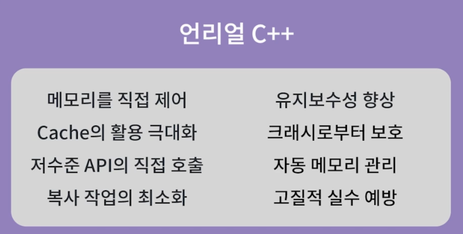
Unreal Object(객체)
언리얼 엔진이 설계한 새로운 시스템의 단위이다.
개요
해당 객체를 생성하기 위해서는 아래 문법을 사용한다.
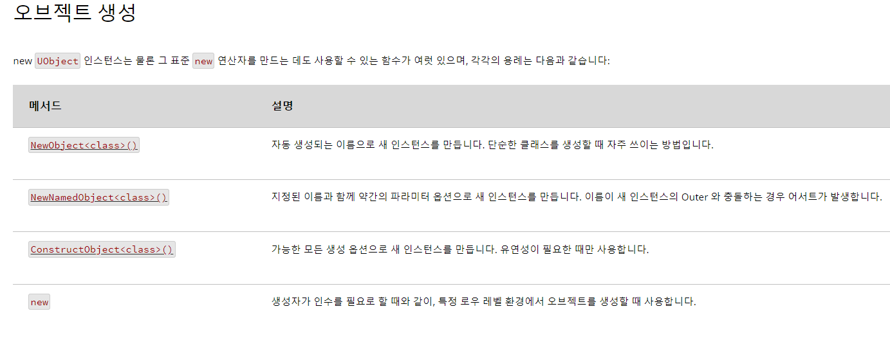
UObject를 쓰면 아래 장점들을 가져갈수있다.
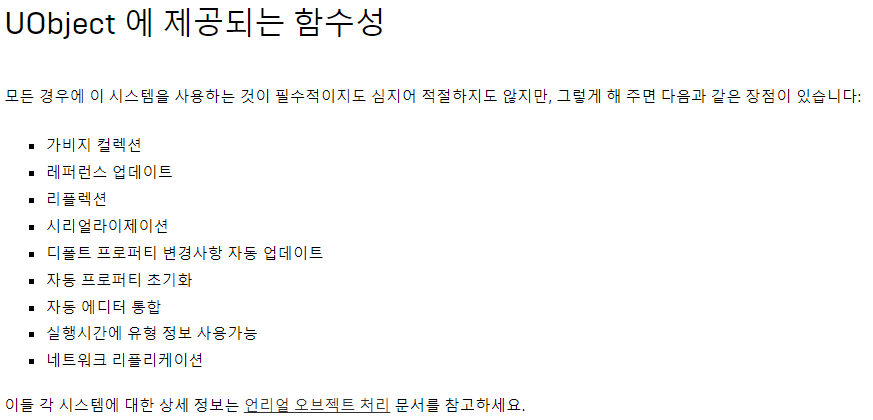
클래스를 생성하면 디폴트 헤더의 모양은 이렇게 생겼다.
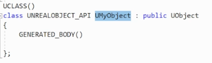
프로젝트_API를 붙이면 언리얼의 다른 라이브러리(모듈)에서 사용할 수 있게 개방한다.
GENERATED_BODY()의 내부를 보면
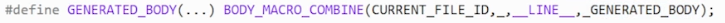
이렇게 생겼다.
BODY_MARCO_COMBINE 내의 인자들을 묶어 긴 문자를 만든다고 이해하면 된다.
- CURRENT_FILE_ID : header.generated.h 내에 기록된 정보
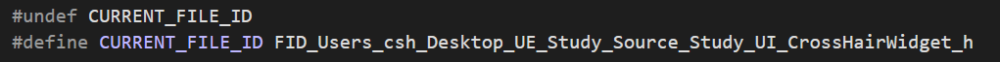
- LINE : GENERATED_BODY()가 작성된 코드 라인
- GENERATED_BODY : 문자 그대로 ㅇㅇ
결과
이런 문자열이 만들어진다.
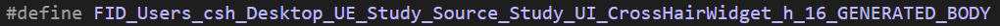
정리하면
모던 객체지향 기능 제공을 위한 코드들이 header.h.generated.h에 기록되고
우리의 헤더에는 GENERATED_BODY()라는 코드로 기록된다.
구성
언리얼 오브젝트는 특별한 프로퍼티와 함수 지정이 가능하다.
멤버 변수 : UPROPERTY
멤버 함수 : UFUNCTION
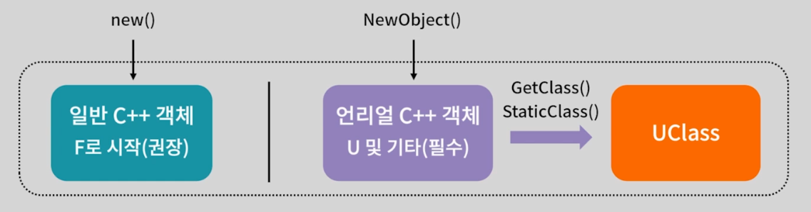
CDO (Class Default Object)
언리얼 클래스에는 CDO정보가 포함되어있다.
CDO에는 언리얼 객체가 가진 기본값이 보관되는 템플릿 객체이다
CDO는 한 클래스로부터 다수의 물체를 생성해 게임 콘텐츠에 배치할 때 일관성 있는 기본값을 지공하는데에 도움된다.
UClass와 CDO는 엔진 초기화 단계에서 생성된다 (디버깅 해보면 로딩창때 중단점 걸림)
따라서 게임 콘텐츠 배치때는 안심하고 쓰자
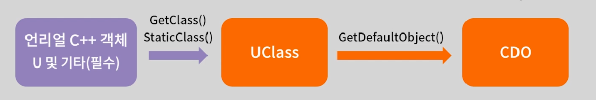
처리
-
자동 프로퍼티 초기화 UObject는 생성자 호출 전 자동으로 0으로 채워진다(모든 property에게 일어남). 이후 클래스 생성자의 커스텀 값으로 초기화가 된다.
-
레퍼런스 자동 업데이트 UObject는 언리얼 시스템에서 제공하는 메모리 관리의 이점을 받을 수 있다.
-
Serialization중에서도 DeltaSerialization을 사용하기 위함이 크다고 한다.
UProperty라고 명시해둔 멤버들은 엔진에서 수정했을때 그 값이 c++상의 UClass수정 없이 저장되고 로드된다.
예를들어 엔진상에서 hp를 500으로 바꾸고 저장하면(c++에서 저장안하고)
이후 클래스의 빌드나 엔진의 재시작등이 일어나도 알아서 불러와진다.
이건 네트워크 통신에서도 가능하다!!
-
프로퍼티 값 업데이트하기 CDO가 변경되면 그 클래스의 모든 인스턴스가 로드될 때 알아서 변경된 CDO를 따른다.
CDO 변경 되기 이전에 CDO와 다른 멤버를 가진 인스턴스가 있다면 그 인스턴스는
CDO변경을 따르지 않는다. (의도적으로 변경되었다고 판단)
-
런타임 유형 정보 및 형변환 UObject는 리플렉션 시스템의 일부임으로 항상 자신이 무슨 UClass라는걸 알고 있어서
형변환을 실시간으로 할 수 있다. (Super클래스 같은걸 말함)
혹여나 캐스팅에 실패했으면 null을 보장해서 우리가 안전하게 코딩 가능
언리얼 리플렉션 시스템
(프로퍼티 시스템 이라고도 한다)
언리얼 시스템의 근간을 이루는 리플렉션 시스템에 대해 알아보자
리플렉션 시스템은 프로그램 실행시간에 자기 자신을 조사하는 기능이다.
런타임 단계에서 클래스 정보를 알 수 있게해주는 것
리플렉션 시스템에 보이도록 했으면 하는 유형이나 프로퍼티에 주석을 달아두면
UHT(unreal header tool)가 그 프로젝트를 컴파일할때 해당 정보를 수집한다.
// 예를들어 내가 다음과 같은 클래스를 만들었을때...
class A
{
public:
int MemberA;
int MemberB;
}
우리는 런타임중에 저 변수의 이름을 문자열로 알 수 없다.
하지만 그것을 알게 해주는것이 리플렉션이다
c++을 사용하니 컴파일러로 뭘 해주는거는 아닐거같고 매크로로 변수 이름을 복사떠서 하는게 아닐까? 싶음
내부적으로 언리얼 헤더툴을 사용해 C#쓰고있음
코드 쭈르르르륵 읽다가 UPROPERTY UFUNCTION붙이면 UHT가 GeneratedBody/generated.h에 UClass라는것을 만들어서 전부 저장해놓는다
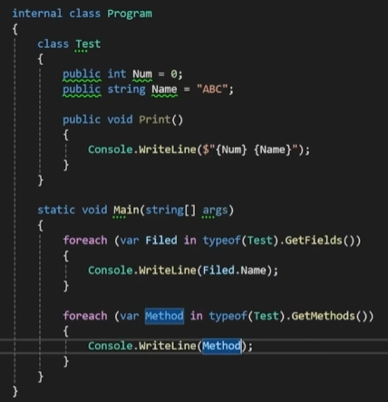
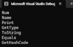
이렇게 멤버변수와 함수명이 잘 불러와진걸 확인할 수 있다.
GetType밑으로는 기본적으로 추가되는 함수들인걸로 보인다
(==연산자, 타입 형 받아오기, Class명을 String으로 바꾸는 함수로 예상된다)
(c++에서는 리플렉션이라는 개념이 없지만 좋은 기능이라 엔진에서 사용할 수 있도록 만든 것)
UENUM(), UCLASS(), USTRUCT(), UFUNCTION(), UPROPERTY()
위의 코드들을 멤버들 위에 선언하면
언리얼 엔진 시스템에서 해당 멤버들을 관리 받을 수 있다.
(언리얼 gc, 엔진상에서 멤버 확인 등등)
언리얼 프로퍼티의 계층구조는 아래와 같다
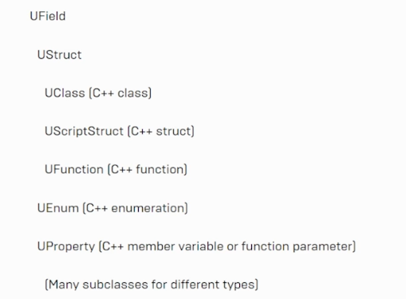
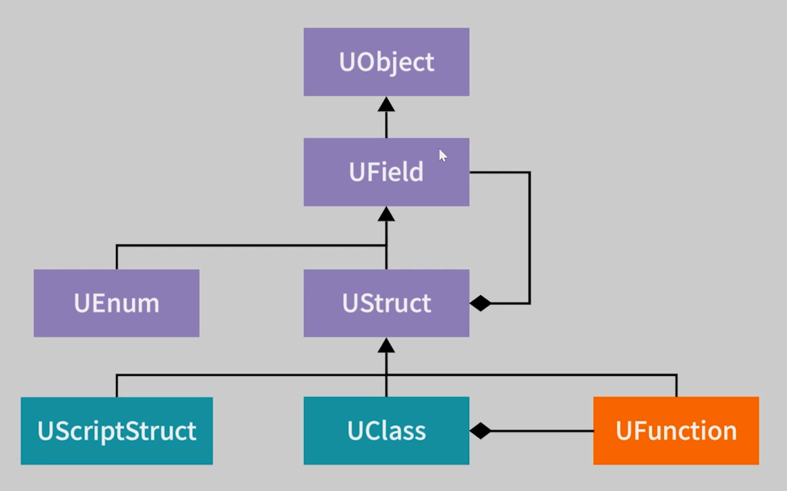
계층구조를 보면 UClass보다 UStruct가 상위 계층인데
기본적인 종합 구조체(c++클래스 구조체 함수 등등)이며 c++구조체와 다르다.
계층구조에 따라 UClass는 UFunction, UScriptStruct, UProperty를 포함할 수 있지만
UFunction, UScriptStruct는 UProperty만 포함이 가능하다.
UTypeName::StaticClass(), Instance->GetClass()를 사용해
내부의 정보들을 빼올 수 있다.
인터페이스
인터페이스란?
- 객체가 반드시 구현해야 할 행동을 지정하는데 활용되는 타입
- 다형성 구현과, 의존성 분리된 설계에 유용하게 활용된다.
C++ 인터페이스의 특징
-
Java와 C#에서는 추상타입 (구현 불가) 으로만 선언이 가능하지만 언리얼은 인터페이스에도 구현이 가능하다.
→ 전부 순수가상함수로 구현한다면 추상타입이 되긴할듯
-
인터페이스를 사용하여 다중 상속을 간편화 시킬 수 있다. (복잡한 클래스들을 다중상속 하게 된다면 유지보수가 어려울 수 있다)
-
언리얼에서 인터페이스를 생성하면 2개의 클래스가 생성된다.
-
U로 시작하는 타입 클래스 클래스 타입 정보를 제공하는 타입 전용클래스
-
I로 시작하는 인터페이스 클래스 실질적 설계 및 구현이 진행되는 부분
-
-
언리얼 c++ 인터페이스는 c++ 기반이기 때문에 추상타입으로 강제되지 않고 내부 구현도 가능하다.
컴포지션
객체지향 설계에서 상속이 가진 Is-A 관계만 의존해서는 설계와 유지보수가 어렵다.
컴포지션은 객체지향 설계에서 Has-A 관계를 구현하는 방법이다.
예시
-
person을 상속받은 student, teacher이 있다고 할 때 학교 출입증이라는 card를 person에게 쥐어줄수 있다.
하지만 이렇게 설계하면 person을 상속받은 학교 관계자가 아닌 class를 만들 때
클래스 네이밍등등 설계부분에서 고쳐야할 부분이 생기게 된다.
따라서card는 컴포지션이라는 개념으로 분류한다.
-
컴포지션을 사용하면 복합적인 기능을 가진 거대한 클래스를 효과적으로 설계가 가능하다.
컴포지션을 사용하면 모던 cpp solid 기법을 이루는데 도움이 되도록 한다.
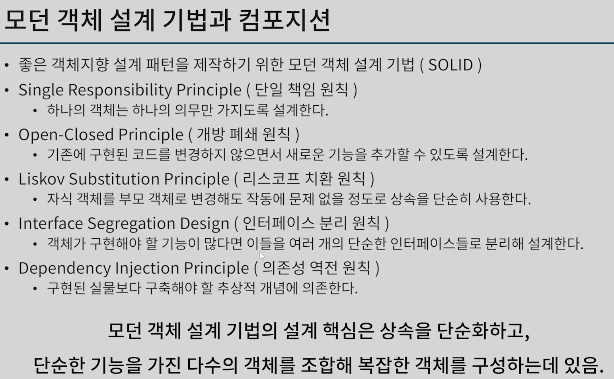
언리얼 엔진의 컴포지션 구현 방법
- 필수 포함 : CDO에 미리 언리얼 오브젝트를 생성해 조합한다
- 선택 포함 : CDO에 빈 포인터만 넣고 런타임에서 언링러 오브젝트를 생성해 조합한다.
위 노드들이 필수 아래가 선택이다.
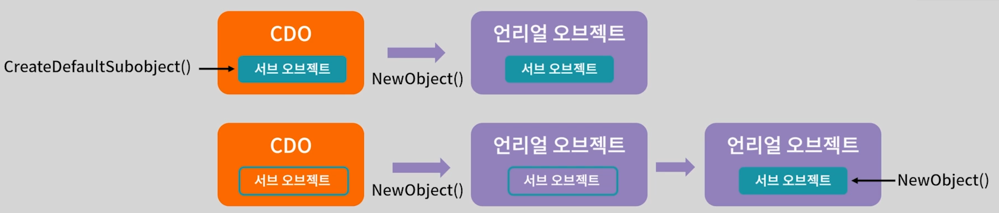
델리게이트
델리게이트를 이해하려면 느슨한 결합을 알고가야 된다고 한다.
강한 결합
-
클래스들이 서로 의존성을 가지는 경우를 의미한다. ex) 내가 만든 예제에서 person 클래스가 card(학교출입증)클래스를 사용하고 있었다
이때 person은 card에 대한 의존성을 가진다고 한다.
만약 핸드폰에서도 인증할 수 있는 새로운 수단이 나오면??
- 기존에 구현한 자식 클래스들의 코드를 전부 수정해야한다.
느슨한 결합
-
강한 결합에서의 문제를 고치기 위해 나온 개념 위 예에서
카드에 중점을 두는게 아니라 인증이라는 수단에 중점을 두는 것이다. -
실물에 의존하지 않고 추상적 설계에 의존하라
-
인증을 처리하는 인터페이스 ICheck를 상속받은 card를 만들어서 처리한다. 나중에 핸드폰 생기면 ICheck상속해서 핸드폰 만들면됨
하지만
매번 이렇게 행동마다 인터페이스 만들면 코드가 커지고 번거로워 질 수 있음
→ 함수를 오브젝트처럼 관리해보자!
함수포인터랑 functional 있잖아요
→ 함수포인터는 복잡하고, functional은 느리다.
그래서 언리얼에서는 C#의 델리게이트 키워드를 가져왔다
- 함수를 객체처럼 다룰 수 있음
- 안정적이면서 간편한 선언
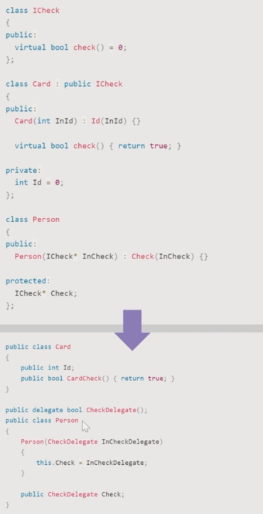
페이로드 데이터
- 묶는 객체에 대한 정보를 지정해서 하나의 구문으로 묶어준다. (그냥 문법인듯)
사용 예제
아무데서나 호출하기를 원하는 함수를 가진 클래스가 있다.
class FLogWriter
{
void WriteToLog( FString );
};
해당 함수를 호출하려면 함수의 시그니처에 맞는 델리게이트 유형을 생성해야 한다.
DECLARE_DELEGATE_OneParam( FStringDelegate, FString ); // 델리게이트 매크로 사용!
사용 법칙은 아래와 같다
-
델리게이트 유형
-
1:1 형태로 c++만 지원시 유형은 공란으로 DECLARE_DELEGATE
-
1:1 형태로 c++만 지원시 유형은 MULTICAST으로 DECLARE_MULTICAST_DELEGATE
-
1:1 형태로 블루프린트 지원시 유형은 DYNAMIC으로 DECLARE_DYNAMIC_DELEGATE
-
1:n 형태로 블프 지 DECLARE_DYNAMIC_MULTICAST_DELEGATE
-
-
함수 정보 세팅
-
인자가 없고 반환값도 없으면
DECLARE_DELEGATE
-
인자가 하나고 반환값이 없으면 OneParam으로 지정한다.
DECLARE_DELEGATE_OneParam
-
인자가 세 개고 반환값이 있으면
DECLARE_DELEGATE_RetVal_ThreeParams
(멀티캐스트는 반환값 지원 X)
- 인자는 최대 9개까지 지원한다.
-
인자가 없고 반환값도 없으면
발행 구독 디자인 패턴이란것도 알아야 된다고 한다.
아래 패턴 구현을 위해 델리게이트가 존재하는 것이기 때문
발행 구독 디자인 패턴
푸시 형태의 notification을 구현하는데 적합한 디자인 패턴
발행자와, 구독자로 구분된다.
이런 꼴로 생김 ㅇㅇ
- 콘텐츠 제작자 : 콘텐츠 생산
- 콘텐츠 발행자 : 콘텐츠 배포
- 콘텐츠 구독자 : 콘텐츠를 받아서 소비
제작자와 구독자가 서로를 몰라도 발행자를 통해 콘텐츠 생산, 전달, 소비가 이루어진다.
⇒ 느슨한 결합
-
장점 느슨한 결합
유지보수가 쉽고 활용이 유연하며 테스트가 쉬워짐
기능확장이 용이하고 시스템 스케일 유연하게 조절 가능
델리게이트를 설계하기 위한 고려사항
-
어떤 데이터를 전달하고 받을 것인가? 인자의 수와 각각의 타입을 설계해야 한다.
- 몇 개의 인자를 전달할 것인가?
- 어떤 방식으로 전달할 것인가?
- 1:1전달
- 1:n전달
-
프로그래밍 환경 설정
- c++ 프로그래밍에서만 사용할것인지
- UFUNCTION(블루프린트 함수)와 사용할 것인지
-
어떤 함수와 연결할 것인가?
- 클래스 외부에 설계된 c++함수
- 전역에 설계된 정적 함수
- 언리얼 오브젝트의 멤버 함수 (대부분 이거씀 ㅇㅇ)
UStruct
UStruct는 언리얼의 구조체이다
구조체 위에 USTRUCT() 매크로 추가하고
구현부 맨 위에 GENERATED_BODY() 매크로 추가한다. (대부분)
- 해당 매크로 선언해야 리플렉션, 직렬화같은 혜택 받음
- 매크로 선언했을때는 일반적인 USTRUCT가 아니라 UScriptStruct로 구현된다.
- 제한적으로 리플렉션 지원한다 UPROPERTY만 사용이 가능하고 UFUNCTION은 사용이 불가능하다.
구조체 안에도 UPROPERTY() 쓸 수 있다.
구조체는 F로 시작하기 때문에 리플리케이션의 혜택을 받을 수 없다.
하지만 구조체 내 변수들은 UProperty라서 리플리케이션 가능
- 굳이 리플렉션 관리 받고싶지 않으면 안해도 된다. (UObject 멤버는 UProperty 무조건 해라!)
구조체는 단순한 데이터 타입에 적합해서 복잡한 애들은 UObject, AActor 쓰자
언리얼 컨테이너
언리얼이 자체 제작해 제공하는 자료구조 라이브러리이다.
줄여서 UCL(unreal container library)라고한다.
언리얼 오브젝트를 안정적으로 지원하며 다수 오브젝트 처리에 유용하게 사용된다.
실제 게임에서는 TArray, TMap, TSet 쓴다
그럼 STL 왜 안쓰고?
- STL에는 기능이 너무 많아 엮여있어 컴파일 시간이 오래걸림
- 언리얼은 언리얼거에만 엮여있으니까 컴파일도 빠르고 언리얼 특화되어있음
알고리즘 라이브러리
Algo/~~~.h 로 include 한다.
예를들어 Algo/Accumulate.h include 하면
Algo::Accumulate(container, initvalue) 를 사용해 컨테이너 안의 값들의 합을 구할 수 있다.
Array Map Set 용도는 모두 같으나
Map과 Set은 구현방법이 상이하다.
TArray
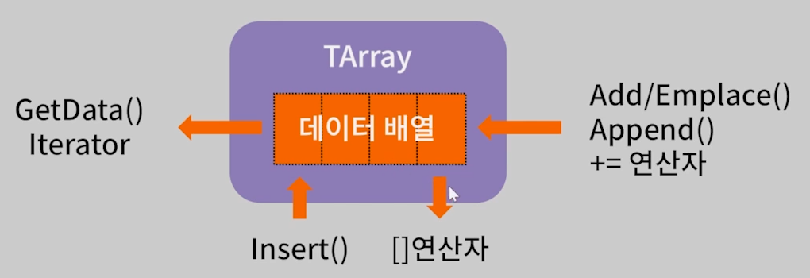
TSet
STL Set vs 언리얼 TSet
STL Set
- 이진트리로 구성되어 있어서 정렬 지원
- 이진트리이기 때문에 메모리 구성 나쁨
- 요소 삭제시에 균형을 위한 재구성
- 자료구조 순회에 적합하지 않음
언리얼 TSet
- TSet은 해시테이블 형태라서 검색 빠름
- 동적 배열 형태로 데이터가 모여있음
- 따라서 순회가 빠름
- 데이터 삭제해도 재구축 X
- 동적배열에 비어있는 데이터가 있을 수 있음
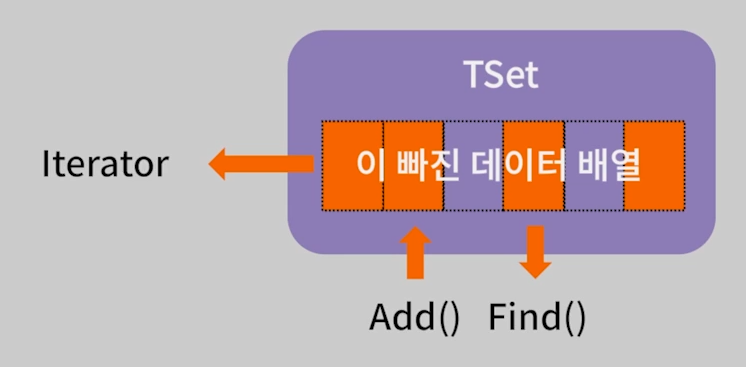
커스텀 구조체나 클래스를 TSet에 저장할 때는
value가 key로 hashing 되기 때문에 어떤 값을 해싱해줘야할지 또는 어떤 방식으로 해싱할지 정해주어야 한다.
uint32 GetTypeHash(const FCustomStruct& struct)
{
return GetTypeHash(CustomStructData.Data); //Data는 int32형
}
TMap
STL Map vs 언리얼 TMap
STL Map
- 이진트리로 구성되어 있어서 정렬 지원
- 이진트리이기 때문에 메모리 구성 나쁨
- 요소 삭제시에 균형을 위한 재구성
- 자료구조 순회에 적합하지 않음
언리얼 TMap
- TSet은 해시테이블 형태라서 검색 빠름
- 동적 배열 형태로 데이터가 모여있음
- 따라서 순회가 빠름
- 데이터 삭제해도 재구축 X
- 동적배열에 비어있는 데이터가 있을 수 있음
가비지 컬렉션
GC란?
- 프로그램에서 더 이상 사용하지 않는 객체를 자동으로 감지해 메모리를 회수하는 시스템
- 동적으로 생성된 모든 객체를 정보를 모아둔 저장소를 사용해 사용되지 않는 메모리 추적
- 마크 스윕(mark sweep) 방식의 GC
- 저장소에서 최초 검색을 시작하는 루트 객체를 표기
- 루트 객체가 참조하는 객체를 찾아 mark 한다
- 마크된 객체로부터 다시 참조하는 객체를 찾아 마크하고 이를 반복
- 저장소에는 마크 된 객체와 그렇지 않은 객체로 나뉜다.
- 마크 안된애들의 메모리를 회수한다 (sweep)
언리얼의 GC
-
마크 스윕 방식 자체 구축
-
지정된 주기마다 모아서 없앰 (default 60s) (한 번 생성된 언리얼 오브젝트는 바로 삭제가 불가능하다)
-
부하를 줄이기 위해 병렬처리, 클러스터링 등의 기능을 사용한다.
언리얼에는 관리되는 모든 UObject의 정보를 저장하는 전역 변수
GUObjectArray 가 있다.
GUObjectArray 의 각 요소에는 Flag가 설정되어 있다.
주요 플래그
-
Garbage flag : 다른 언리얼 오브젝트로부터의 참조가 없어 회수 예정인 오브젝트
-
RootSet flag : 다른 언리얼 오브젝트로부터 참조가 없어도 회수되지 않는 특별한 오브젝트 만약 시스템 내에서 계속 존재하길 원하는 오브젝트를 AddToRoot 함수를 호출해 플래그를 설정할 수 있다. 메모리 회수로부터의 보호를 풀려면 RemoveFromRoot 함수를 사용하자
컨텐츠 오브젝트에 RootSet Flag 사용하는건 권장되지 않는다.
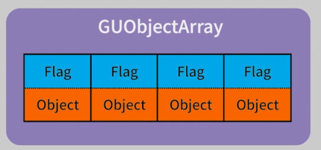
- 이 외에도 UPROPERTY를 사용하면 객체가 GC에 회수되지 않는다. 만약 UPROPERTY 쓸 수 없는 상황이면 AddReferencedObject 함수를 통해 참조를 설정해라
언리얼 내에서의 포인터 문제 해결
c++에서는 아래 문제를 개선하기 위해 스마트포인터가 있긴하다.
- 메모리 누수
- GC가 알아서 해준다
- 댕글린 포인터
- 이거 확인하라고 IsValid 함수 있는거임
- 와일드 포인터
- UPROPERTY 매크로 해주면 자동으로 nullptr로 초기화해줌
언리얼 내에서 오브젝트 포인터는 가급적 UPROPERTY쓰고 메모리는 GC가 알아서 하도록
냅둔다.
언리얼 오브젝트 관리 원칙
- 생성된 언리얼 오브젝트를 유지하기 위해 레퍼런스 참조 방법 설계
- 언리얼 클래스내의 언리얼 오브젝트 : UPROPERTY사용
- 일반 c++ 클래스내의 언리얼 오브젝트 : c++클래스를 FGCObject 상속 후 구현
- AddReferencedObjects 함수를 오버라이드 한다.
virtual void AddReferencedObjects(FReferenceCollector& Collector) { if(UEObject->IsValidLowLevel()) { Collector.AddReferencedObjects(UEObject); } } - GetReferencerName 함수를 오버라이드 한다.
virtual FString GetReferencerName () const override { return TEXT("클래스명"); }
- AddReferencedObjects 함수를 오버라이드 한다.
- 생성된 언리얼 오브젝트는 강제로 지우려고 하지 말 것
- 참조를 끊는다는 생각으로 설계하라
- GC에게 후딱 회수하라고 시킬 수 있긴함 (ForceGarbageCollection함수)
- 콘텐츠 제작에서 Destroy함수 쓸 수 있으나 내부 동작은 동일함 (GC에게 위임하는 것)
직렬화 (Serialization)
직렬화란?
- 복잡한 오브젝트 정보를 일렬로 정렬된 Byte Stream으로 변환하는 것
- 일렬로 저장된 데이터를 오브젝트로 복구하는 작업까지 포함(Deserialization)
- 장점
- 현재 프로세스 상태를 저장하고 필요한 때 복원 가능 (게임 저장)
- 현재 객체 정보를 클립보드에 복사해 다른 프로세스에 전송 가능
- 네트워크를 통해 현재 프로그램 상태를 다른 컴퓨터에 복원 가능 (멀티 플레이어 게임)
- 직렬화 된 데이터는 압축, 암호화를 통해 효율적이고 안전하게 보관 가능
직렬화는 일관성 있는 동작을 만들기 위해 다양한 상황을 고려해야 한다.
- 데이터 레이아웃 : 오브젝트가 가지고 있는 데이터를 어떤식으로 일렬로 세울지 기획 필요
- 이식성 : 다른 시스템에 전송해도 똑같이 이식이 가능한지 고려
- 버전 관리 : 새로운 기능을 만들면 데이터 레이아웃이 바뀌어 직렬화가 무효화 될 수 있음
- 성능 : 네트워크 비용을 줄이기 위해 어떤 데이터 형식을 사용할 것인가?
- 보안 : 다른 사람들이 이 데이터를 봤을 때 오염이 불가능하게
- 에러 처리 : 전송 과정에서 문제가 발생할 경우 어떻게 인식하고 처리할지
언리얼에서는 FArchive 클래스로 직렬화 기능을 제공하고 있다.
-
메모리에 전송하는 메모리 아카이브 (FMemoryReader, FMemoryWriter)
-
파일 아카이브 (FArchiveFileReaderGeneric, FArchiveFileWriterGeneric)
-
기타 언리얼 오브젝트와 관련된 아카이브 클래스 (FArchiveUObject)
-
Json 직렬화 기능도 별도 라이브러리를 통해 제공하고 있다.
-
Json 직렬화 웹 환경에서 서버-클라가 데이터 주고받을 때 사용하는 텍스트 기반 데이터 포멧
-
Json 장점
- 텍스트임에도 데이터 크기 가벼움
- 사람이 이해하기 편함
- 웹표준으로 널리널리 사용중
-
Json 단점
-
지원하는 타입이 적음 (string, number, bool, null, array, object only) ex ) 숫자가와도 이게 int인지 long 인지 그런거 모름
-
텍스트 형식으로만 사용 가능 가벼운 텍스트지만 서버같은곳에서는 극한의 성능을 요구하는 바가 있기 때문에
무겁긴함
-
언리얼에서는 Json, JsonUtilities 라이브러리 사용한다.
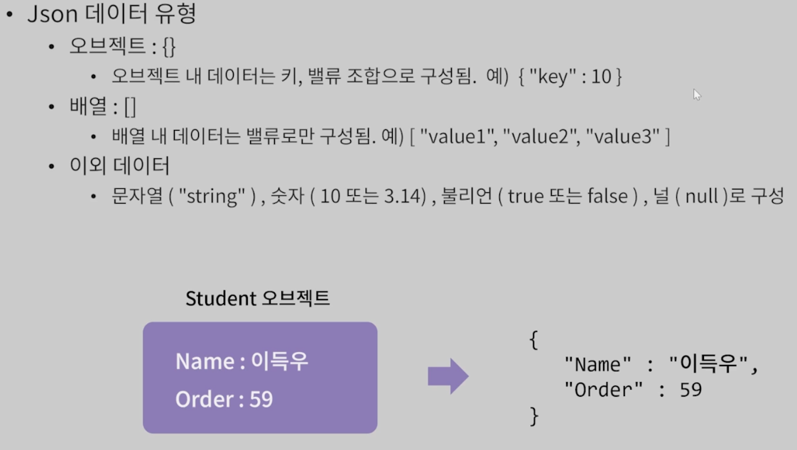
#include "JsonObjectConverter.h" ... { const FString JsonDataFileName(TEXT("StudentJsonData.txt")); FString JsonDataAbsolutePath = FPaths::Combine(*SavedDir, *JsonDataFileName); FPaths::MakeStandardFilename(JsonDataAbsolutePath); // UEObj -> JsonObj TSharedRef<FJsonObject> JsonObjectSrc = MakeShared<FJsonObject>(); // 스키마(데이터 구조)를 알아야 하기때문에 클래스 정보 넘김, 인스턴스 넘김, dest JsonObj 넘김 FJsonObjectConverter::UStructToJsonObject(std1->GetClass(), std1, JsonObjectSrc); // build.cs 에서 모듈 포함 가능 // 빌드 오류 발생!!! }해당 코드에는 헤더만 include 되어있고 cpp파일은 모르기 때문에 라이브러리 연동해줘야한다.
프로젝트.build.cs 파일에서 모듈(라이브러리)를 포함해야한다.
PublicDependencyModuleNames.AddRange(new string[] { ..., "Json", "JsonUtilities" }); -
언리얼 스마트 포인터
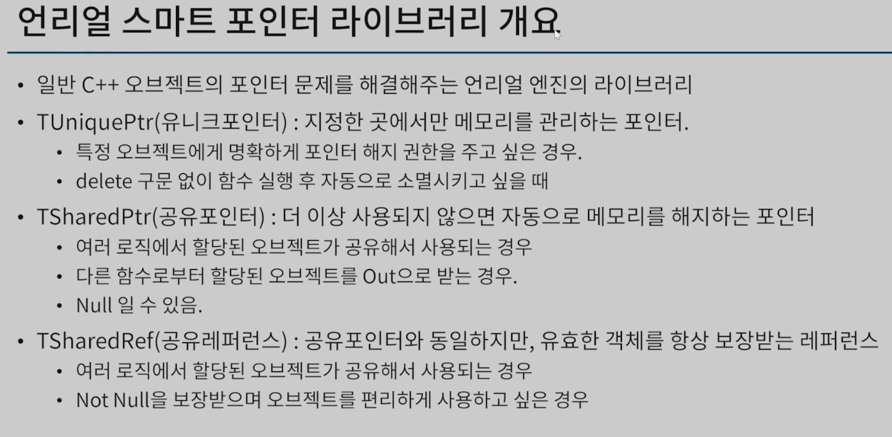
언리얼 오브젝트 패키지
단일 언리얼 오브젝트가 가진 정보는 저장할 수 있지만, 오브젝트들이 조합되어 있다면?
(우리가 관리하는 클래스 만들어도 되지만~ 언리얼에서 제공한다.)
언리얼 오브젝트는 이를 위해 UPackage 단위로 언리얼 오브젝트를 관리한다.
언리얼 오브젝트는 패키지는 언리얼 오브젝트를 감싼 포장 오브젝트이다.
(게임 패키징, pkg 파일과는 다르다)
패키지와 애셋
우리가 지금까지 만들어본 모든 언리얼 오브젝트는 UPackage에 소속되어있다.
애셋 : 언리얼 오브젝트 패키지의 서브 오브젝트
애셋은 다시 다수의 서브 오브젝트를 가질 수 있고 이들은 패키지에 포함된다.(에디터 노출 x)
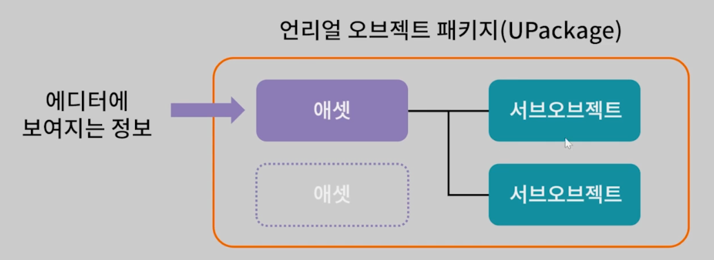
구조상 패키지는 다수의 언리얼 오브젝트를 가질 수 있지만 일반적으로는 한개만 가진다.
아래 사진의 TopStudent가 AssetName, /Game/Student가 PackageName이다.
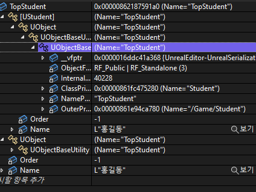
애셋 정보의 저장과 로딩 전략
-
게임 제작 단계에서 애셋 간의 연결 작업을 위해 직접 패키지를 불러 할당하는 작업은 부하가 크다.
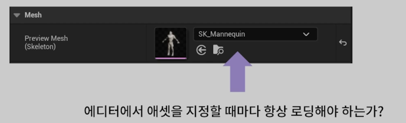
- 애셋로딩 대신 패키지와 오브젝트를 지정한 문자열을 대체해 사용 (오브젝트 경로)
- 오브젝트 경로값은 유일값 보장
- 오브젝트간의 연결은 오브젝트 경로 값으로 기록 가능
-
애셋 로딩 전략
- 프로젝트에서 애셋이 반드시 필요한 경우 : 생성자 코드에서 미리 로딩
- 런타임에서 필요한 때 바로 로딩하는 경우 : 런타임 로직에서 정적 로딩
- 이 경우 다른 프로세스의 실행을 막는다 (게임 멈춤)
- 런타임에서 비동기적으로 로딩하는 경우 : 런타임 로직에서 관리자를 사용해 비동기 로딩
오브젝트 경로
- 패키지 이름과 애셋 이름을 한 데 묶은 문자열
- 애셋 클래스 정보는 생략 가능
- 패키지 내 데이터를 모두 로드하지 않고 오브젝트 경로를 사용해 필요 애셋만 로드가능
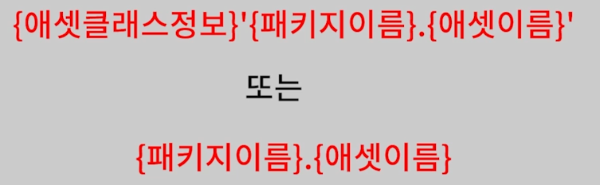
애셋 스트리밍 관리자 (Streamable Manager)
- 애셋의 비동기 로딩을 지원하는 관리자 체계
- 콘텐츠 제작과 무관한 싱글턴 클래스에 FStreamableManager를 선언해주면 좋음
- GameInstance는 좋은 선택지
- 다수의 애셋 로딩 가능
언리얼 빌드 시스템
언리얼 에디터 구성
- 에디터 : 게임 제작을 위해 제공되는 응용 프로그램 (일반적으로 인식하는 엔진)
- 게임 빌드 : EXE파일과 리소스로 이루어진 독립적으로 동작하는 게임 클라이언트
에디터에서 기획과 개발을 완료하고 게임 빌드를 통해 게임을 만든다.
블루프린트 프로젝트
- c++ 코드가 없는 언리얼 프로젝트를 의미
- 언리얼 엔진이 제공하는 기본 기능을 활용해 게임을 제작하는 프로젝트
- 제작에 필요한 기능을 모듈이라는 단위로 제공
- 엔진의 모듈을 상속받아 블루프린트를 활용해 모든 기능과 로직 구현
프로젝트를 개발하다보면 프로젝트가 커질수록
내 프로젝트에 필요한 모듈을 설계해서 c++모듈로 만들 필요가 있다.
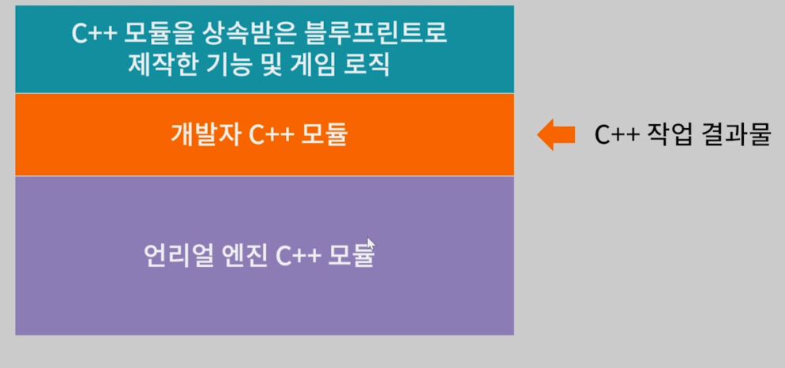
언리얼 c++ 모듈
- 언리얼 엔진의 소스코드는 모두 모듈 단위로 구성되어 있다.
- 모듈을 컴파일해서 에디터,게임에 제작한 로직 공급 가능
c++소스를 컴파일한 결과물은 아래와 같이 사용된다.
에디터 : DLL동적 라이브러리
게임 : 정적 라이브러리
모듈 추가방법
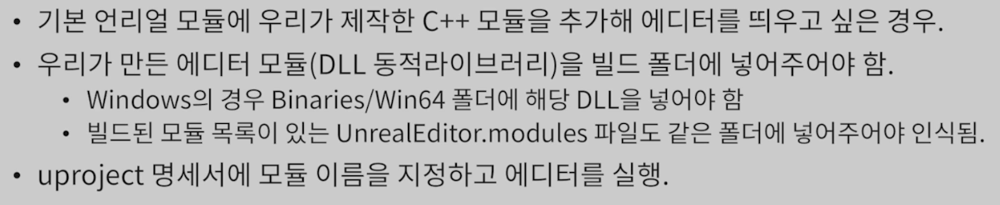
기타
프로젝트 레이어
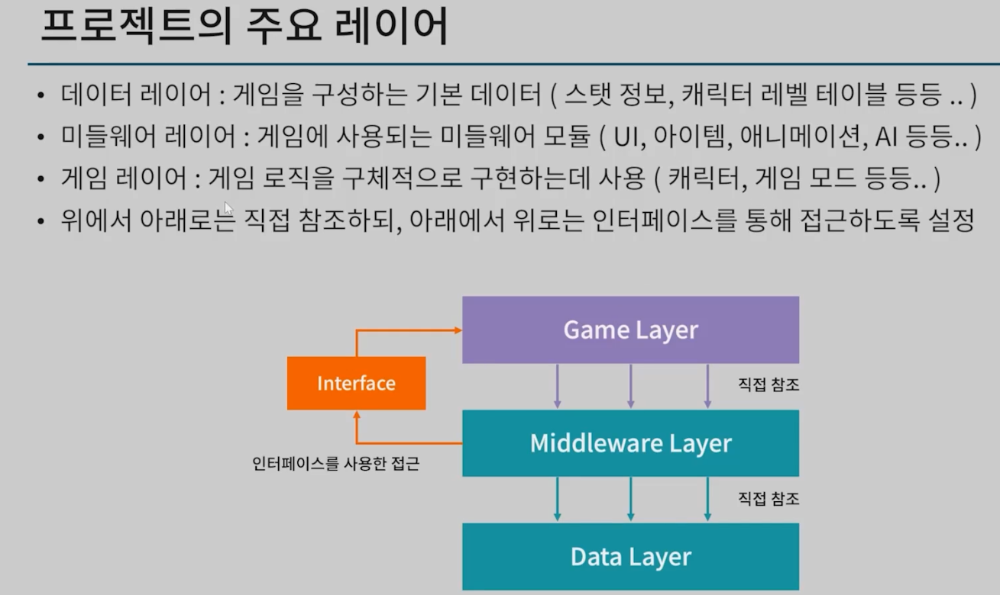
ex) 아이템을 먹었을때 캐릭터한테 특정 행동을 수행하라고 명령을 내리는 것은 인터페이스로 구현한다.
소프트레퍼런싱 vs 하드레퍼런싱
-
액터 로딩시 TObjectPtr로 선언한 멤버변수 언리얼 오브젝트도 따라 메모리에 로딩됨 ⇒ 이게 하드 레퍼런싱임
-
기본 클래스에 반드시 필수적인 오브젝트면 상관없지만 아이템은 먹으면 동적할당 하면 됨
-
이를 위해 필요한 데이터만 로딩하도록 TSoftObjectPtr로 선언하고 애셋 주소 문자열을 지정
-
애셋 로딩시간이 소요되긴하나 필요시에만 애셋을 로딩할수 있음
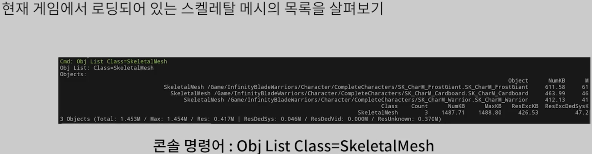